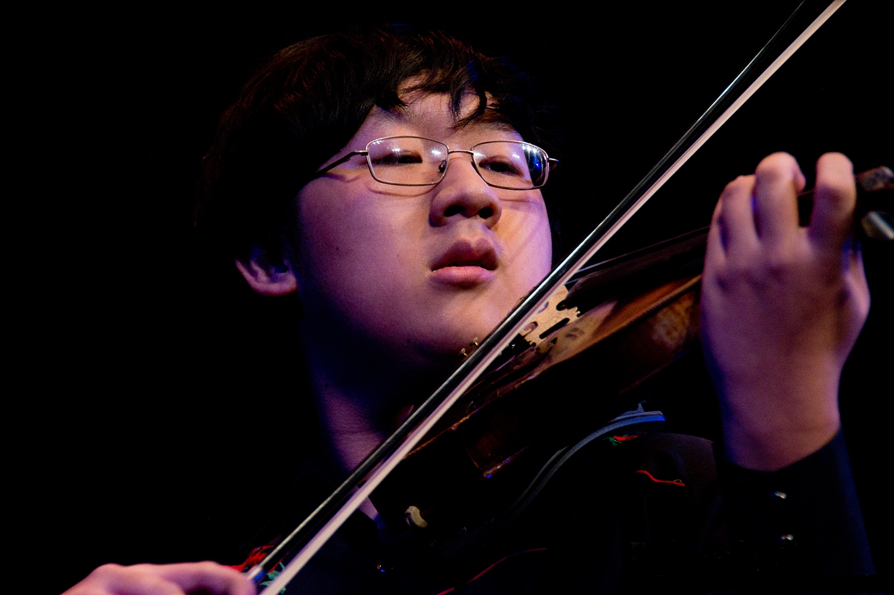
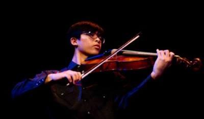
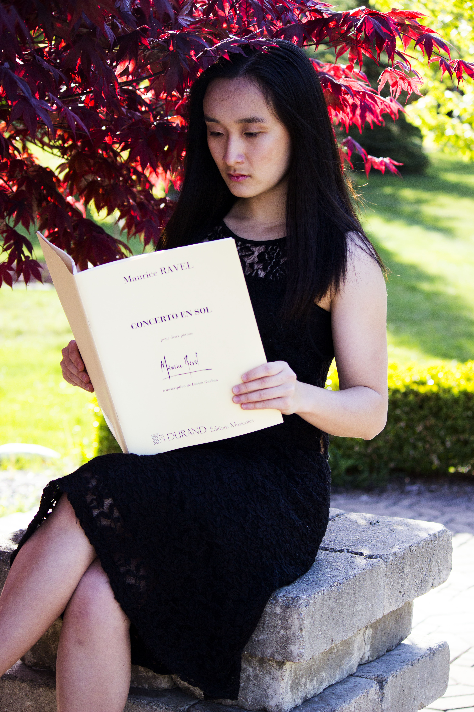

Members
Allison Feng
Violin
Allison has been studying violin performance for eleven years. She is the concertmaster of the Troy High Symphony Orchestra as well as co-concertmaster of the Oakland Youth Orchestra's Symphony Orchestra. In addition, she has performed at Orchestra Hall with the Detroit Youth Symphony Orchestra and has been awarded numerous honors in OYO's Solo and Concerto Competition.
William Zhou
Violin
William has been studying violin for eleven years. He was concertmaster of the Oakland Youth Philharmonic Orchestra and assistant concertmaster of the Oakland Youth Symphony Orchestra. He has also played with the Detroit Youth Symphony Orchestra and toured Europe with the Macau Youth Symphony Orchestra from China. In 2013, he was awarded first place in the Oakland Youth Orchestra Solo and Concerto Competition. He is currently a junior member in the Troy Country Fiddlers and principal second violinist of the Troy High Symphony Orchestra.
Andrew Li
Viola
Andrew has been studying viola performance for 7 years. He was a violist in the Michigan All-State Orchestra and Oakland Youth Orchestra for 3 and 4 years, respectively. He worked for Adams High School in their pit orchestra. He is a soloist in the Troy High Country Fiddlers. He is currently a senior and principal violist in the Troy High Symphony Orchestra. Additionally, he is the conductor of the chamber ensemble Making Musical Memories.
Wesley Chiu
Cello
Wesley has been playing cello for seven years. He was chosen as the principal cellist of the Michigan All-State Orchestra during his freshman year of high school. Being a member of the Detroit Youth Symphony Orchestra for three years, he has performed many solos with the full orchestra. He is currently a senior and principal cellist of the Troy High Symphony Orchestra.
Demi Yang
Manager
Demi has been studying violin and piano performance for seven and twelve years, respectively. She is a grand prize recipient at the World Piano Competition and has performed piano at many notable concert halls, including Carnegie Hall and Lincoln Center. At Troy High, she was in the Symphony Orchestra and Troy Country Fiddlers. She was a section leader in Troy High's pit orchestra during a production of South Pacific. She is currently a sophomore in Michigan State University's Concert Orchestra.